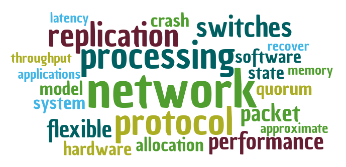

About Me!
I am was a Ph.D. student at the University of Washington working
with Arvind
Krishnamurthy and Dan Ports in
the Systems &
Networking Group. Before coming here, I received my
Integrated Bachelors and Masters in Computer
Science & Engineering from IIT,
Kharagpur where I was advised by
Niloy Ganguly.
I also spent two summers interning at MPI-SWS
working under the amazing mentorship of
Krishna Gummadi.
I am broadly interested in the field of distributed systems and networks. My current research focuses on high performance and low latency applications for datacenters. I work at both the OS and network layers to achieve the goals of my research. I am fascinated by all aspects of building a complete system which includes design, modeling, analysis, implementation, evaluation and measurement.
I have the pleasure of working with some fantastic colleagues,
Antoine Kaufmann,
Jialin Li,
Ming Liu,
Adriana Szekeres,
and Irene Zhang.
What do I work on?
A word cloud from the abstracts of my recent publications, generated using this tool. Recent Publications
-
Meerkat: Multicore-Scalable Replicated Transactions Following the Zero-Coordination Principle,
Adriana Szekeres, Michael Whittaker, Jialin Li, Naveen Kr. Sharma, Arvind Krishnamurthy, Dan R. K. Ports and Irene Zhang,
European Conference on Computer Systems (EuroSys), Heraklion, Greece, April 2020.
-
Programmable Calendar Queues for Packet Scheduling,
Naveen Kr. Sharma, Chenxingyu Zhao, Ming Liu, Pravein Govindan, Changhoon Kim, Arvind Krishnamurthy and Anirudh Sivaraman,
USENIX Symposium on Networked Systems Design and Implementation (NSDI), Santa Clara, CA, USA, February 2020.
-
Approximating Fair Queueing on Reconfigurable Switches
Naveen Kr. Sharma, Ming Liu, Kishore Atreya and Arvind Krishnamurthy
USENIX Symposium on Networked Systems Design and Implementation (NSDI), Renton, WA, April 2018.